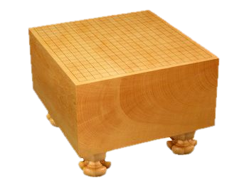

Règles du Jeu de Go
📋 Sommaire
1. Le plateau de jeu (Goban)
Le go se joue sur un plateau appelé goban. Les joueurs posent leurs pierres sur les intersections des lignes, et non dans les cases.
| Taille | Intersections | Hochi | Niveau recommandé |
|---|---|---|---|
| 9 x 9 | 81 | 5 | Débutants |
| 13 x 13 | 169 | 4 | Intermédiaires |
| 19 x 19 | 361 | 9 | Parties complètes |
Hochi : Intersections marquées d'un point plus gros, utilisées pour les pierres de handicap et comme repères visuels.

Goban 9x9 avec ses 5 hochi
2. Placement des pierres
La partie commence avec un plateau vide. Les joueurs posent à tour de rôle une pierre de leur couleur sur une intersection libre. Noir joue toujours en premier.
Une fois posées, les pierres ne se déplacent plus et ne peuvent être retirées que si elles sont capturées.
Interdit : Un joueur ne peut pas poser une pierre sur une intersection sans liberté, sauf si ce coup capture des pierres adverses.
3. Libertés et groupes
Deux intersections sont voisines si elles sont adjacentes horizontalement ou verticalement. La diagonale ne compte pas.
| Position | Nombre de voisins |
|---|---|
| Intersection intérieure | 4 |
| Intersection de bord | 3 |
| Intersection de coin | 2 |
Le nombre de libertés d'une pierre ou d'un groupe est le nombre d'intersections libres voisines.
Deux pierres de même couleur adjacentes forment un groupe. Les libertés du groupe sont toutes les intersections libres autour de lui.

Groupe de 3 pierres noires — libertés en vert
4. Règle de la capture
Quand un coup supprime la dernière liberté d'un groupe adverse, toutes ses pierres sont capturées et retirées du goban. Elles deviennent les prisonniers du joueur.

Le coup rouge capture le groupe blanc qui n'a plus de liberté
Les prisonniers : seront soustraits du score de l'adversaire en fin de partie.
5. Règle du Ko
Le ko (« éternité ») empêche les parties infinies. Sans cette règle, deux joueurs pourraient se recapturer la même pierre indéfiniment.
Interdit : Jouer un coup qui recrée un état du goban déjà rencontré dans la partie.
En pratique, après une capture de ko, l'adversaire doit jouer ailleurs avant de pouvoir reprendre.
6. Fin de partie
À chaque tour, un joueur peut poser une pierre ou passer. En passant, il donne un prisonnier à l'adversaire.
Fin : La partie se termine quand les deux joueurs passent consécutivement. On procède alors au comptage des points.
7. Comptage des points
La méthode utilisée est la méthode française, en 4 étapes :
- 1 Retirer les pierres mortes. Les pierres isolées dans le territoire adverse sont retirées et ajoutées aux prisonniers de l'adversaire.
- 2 Compter les territoires. Chaque intersection libre entourée par ses propres pierres vaut 1 point.
- 3 Soustraire les prisonniers. On déduit du score le nombre de prisonniers capturés par l'adversaire.
- 4 Ajouter le komi à Blanc. Bonus entre 0,5 et 7,5 points pour compenser le premier coup de Noir.
8. Parties à handicap
Le joueur le plus faible (Noir) place des pierres d'avance sur les hochi avant la partie. Blanc joue alors en premier.
| Goban | Pierres de handicap | Komi avec handicap |
|---|---|---|
| 9 x 9 | 2 à 4 | 0.5 |
| 13 x 13 | 2 à 5 | 0.5 |
| 19 x 19 | 2 à 9 | 0.5 |
9. Lexique
- Goban : plateau de jeu
- Pierre : pion du joueur (noir ou blanc)
- Hochi : intersections marquées pour les pierres de handicap
- Liberté : intersection libre adjacente à une pierre ou un groupe
- Groupe : pierres de même couleur reliées par adjacence
- Prisonnier : pierre capturée, déduite du score en fin de partie
- Ko : règle interdisant de revenir à un état antérieur du goban
- Komi : bonus de points donné à Blanc
- Territoire : intersections libres entourées par les pierres d'un joueur
- Pierre morte : pierre isolée dans le territoire adverse
- Joseki : séquence d'ouverture classique